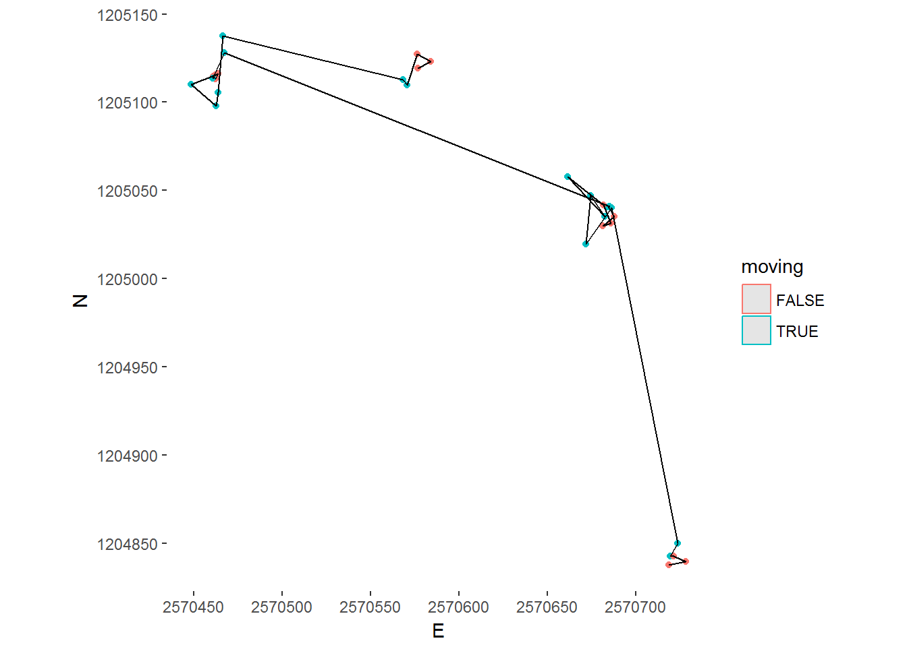

4 Lesson 3
4.1 Learning Outcomes
- You are able to segment a trajectory using Laube and Purves (2011)
- You are able to compute the similarity between given trajectories using the package
SimilarityMeasures. - You acquire further useful data processing skills.
4.2 Prerequisites
Readings Skills from “R for Data Science” (Wickham and Grolemund 2017):
- RS3.1 Chap1 Data visualization with ggplot2 (31, 3-35)
- RS3.2 Chap5 Exploratory Data Analysis (28p, 81.109)
Readings Theory Alan Both (2018) A Comparative Analysis of Trajectory Similarity Measures: Recommendations for Selection and Use, in review with PLOS ONE, confidential.
4.3 Preperation
4.4 Tasks
4.4.1 Task 1
Picking up at Task 4 from last week: we can now implement this algorithm using the dplyr / mutate() method. This might seem a little challenging at first, but if you have completed Task 4 or at least looked at the sample solution, it is quite easy. You can pass anything to a new column within mutate() as long as it is a vector of the same length as the original dataframe.
4.4.2 Task 2
We can now explore the newly created Values stepMean using summary statistics (histogramms, boxplot, summary()) and define a reasonable threshold value to differentiate between “stops” and “moves”. There is no “correct” way of doing this, specifying a threshold always depends on the question that needs to be answered.
## Min. 1st Qu. Median Mean 3rd Qu. Max. NA's
## 0.000 5.109 14.211 57.382 62.224 1811.620 40
Based on this data, I will go with a threshold value of 15. Apply your threshold on you data (condition: stepMean > 15).
Plot a subset of data to verify if the arbitrary threshold was a reasonable choice. - subsetting the first ten rows can be done with [1:10,] (dont forget the comma!) - we have a couple of NA values in the beginning and end of each trajectory. Use filter(!is.na(moving)) to remove these values from the plot - if you add the layer geom_sf() ggplot will only plot points. To add the lines in between you’ll have to specify the x and y values (E and N) - add the layer coord_sf(datum = 2056) - wrap the whole plot function in ggplotly() if you want to enable zooming / panning

4.4.3 Task 3 (Optional)
To be honest, exploring segmentation with ggplot (and even plotly) is not very satisfying. Another great tool to visualize spatial data is leaflet. It’s not all that hard to create a leaflet plot, just take a look at the documentation and try it with our segmented wild boar data.
4.4.4 Task 4
Use the package recurse (function getRecursions) to determin sites which are often visited.

4.5 Solution (R Code)
library(tidyverse)
library(plotly)
library(CMAtools)
library(recurse)
## Task 1 ####################
wildschwein_BE_sf <- wildschwein_BE_sf %>%
group_by(TierID) %>%
mutate(
stepMean = rowMeans(
cbind(
euclid(lag(E, 2),lag(N, 2),E,N),
euclid(lag(E, 1),lag(N, 1),E,N),
euclid(E,N,lead(E, 1),lead(N, 1)),
euclid(E,N,lead(E, 2),lead(N, 2))
)
)
)
## Task 2 ####################
summary(wildschwein_BE_sf$stepMean)
ggplot(wildschwein_BE_sf, aes(stepMean)) +
geom_histogram(binwidth = 1) +
lims(x = c(0,100)) +
geom_vline(xintercept = 15)
wildschwein_BE_sf <- wildschwein_BE_sf %>%
mutate(
moving = stepMean > 15
)
wildschwein_BE_sf[20:50,] %>%
filter(!is.na(moving)) %>%
ggplot() +
geom_sf(aes(colour = moving)) +
geom_path(aes(E,N)) +
coord_sf(datum = 2056) +
theme(
panel.grid.major = element_line(colour = "transparent"),
panel.background = element_rect(fill = "transparent")
)
## library(leaflet)
## library(scales)
## factpal <- colorFactor(hue_pal()(2), wildschwein_BE_sf$moving)
##
## # checking to see if this all makes sense in leaflet: (or better ggplot?)
## wildschwein_BE_sf[0:200,] %>%
## filter(!is.na(moving)) %>%
## leaflet() %>%
## addCircles(radius = 1,lng = ~Long, lat = ~Lat, color = ~factpal(moving)) %>%
## addPolylines(opacity = 0.1,lng = ~Long, lat = ~Lat) %>%
## addTiles() %>%
## addLegend(pal = factpal, values = ~moving, title = "Animal moving?")
library(recurse)
library(ggforce)
recurs <- wildschwein_BE_sf %>%
filter(TierID == "001A") %>%
select(E,N,DatetimeUTC,TierID) %>%
st_set_geometry(NULL) %>%
as.data.frame() %>%
getRecursions(100)
recurStats <- recurs$revisitStats
recurStats <- recurStats %>%
group_by(coordIdx) %>%
summarise(
number_of_visits = max(visitIdx),
x = unique(x),
y = unique(y),
total_time = sum(timeInside),
max_time = max(timeInside),
mean_time = mean(timeInside)
)
data1 = filter(recurStats, number_of_visits > 30)
wildschwein_BE_sf %>%
ungroup() %>%
filter(TierID == "001A") %>%
ggplot(aes(E,N)) +
geom_point(alpha = 0.4, colour = "grey") +
geom_circle(data = data1, alpha = 0.5, aes(x0 = x,y0 = y,fill = mean_time,r = 100),inherit.aes = F) +
coord_fixed(1)
## NA